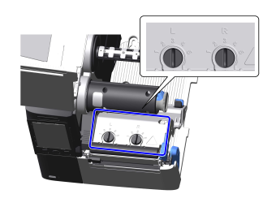

ヘッド圧バランスを調節する
ヘッド圧バランスとは、サーマルヘッドとプラテンローラー間の圧力のバランスを指します。ヘッド圧バランスの調整が適切でないと、用紙の片側の印字が反対側より濃くなったり、用紙が片側にずれたりします。
- ヘッド圧調整ダイヤルの位置を確認します。
 - 用紙の厚さに合わせてヘッド圧調整ダイヤルを回し、ヘッド圧を設定します。
用紙厚（mm）*1 ヘッド圧調整ダイヤル 用紙の例 0.060～0.200 左（L）：3
右（R）：3
薄い用紙、標準的な用紙など 0.200～0.268 左（L）：4～5
右（R）：4～5
厚い用紙、タグなど 
- 工場出荷時設定は、左右とも「3」です。
- 実際に印字してみて、用紙が本製品正面から見て右側にずれて送られる場合は、用紙の幅に合わせてヘッド圧調整ダイヤルを回し、圧力バランスを設定します。
下の表は、ヘッド圧が左「3」の場合の例を示しています。
CL4-SXR用紙幅（mm） ヘッド圧調整ダイヤル 25～54 左（L）：5
右（R）：1
54～83 左（L）：3または4
右（R）：2
83～131 左（L）：3
右（R）：3
CL4-SXR高精度印字を使用する場合：用紙幅（mm） ヘッド圧調整ダイヤル 25～54 左（L）：5
右（R）：1
54～83 左（L）：5
右（R）：3
83～131 左（L）：5
右（R）：5
CL6-SXR通常の印字時、高精度印字使用時ともに設定値は同じです。
用紙幅（mm） ヘッド圧調整ダイヤル 50～90 左（L）：5
右（R）：1
90～130 左（L）：5
右（R）：3
130～180 左（L）：3
右（R）：3
- 工場出荷時設定は、左右とも「3」です。
- 表中のダイヤル設定値は目安であり、用紙種類によって最適な設定値は異なる場合があります。実際に印字してみて印字品質が安定することを確認してください。
- 高精度印字について詳しくは、高精度印字の設定を参照してください。